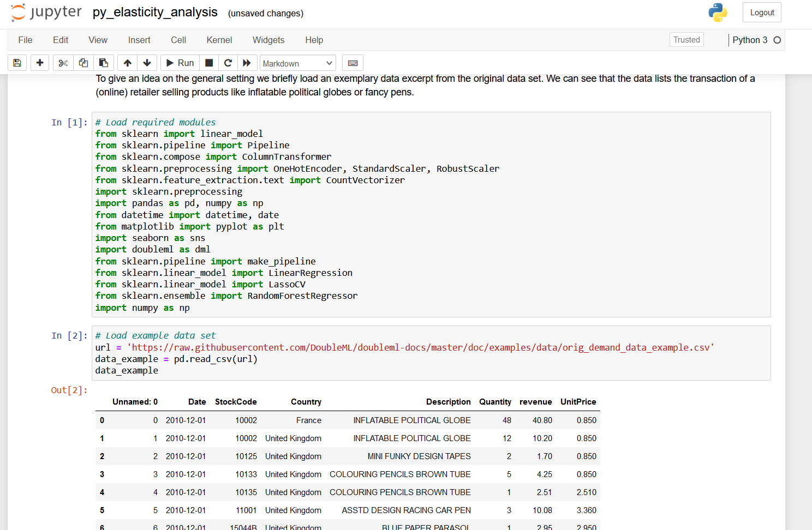
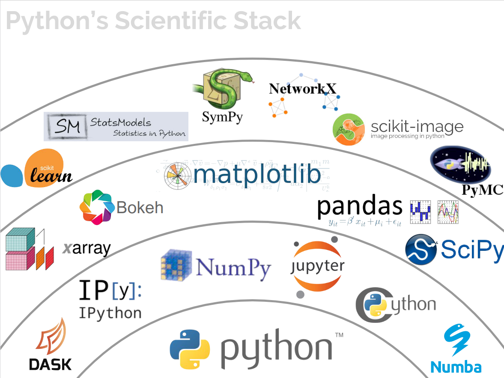
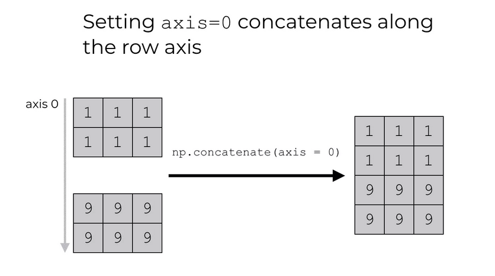
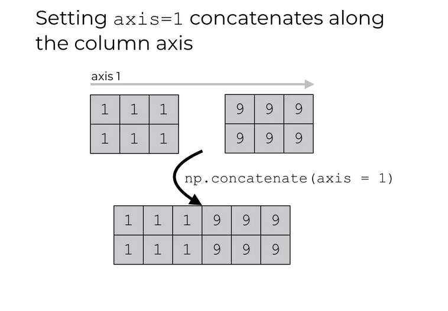

hello world!Lecture 1: Introduction to Statistical Programming
Topics in Econometrics and Data Science
Prof. Dr. Jannis Kück
Welcome and Motivation
Welcome to Statistical Programming with Python
About this course
- Course outline
- Part I: Introduction to Programming with Python
- Part II: Basics of Statistics
- Part III: Machine Learning - Regression
- Part IV: Machine Learning - Classification
- Materials will be provided on this GitHub page
Welcome to Statistical Programming with Python
About this course
- Teaching
- Lecture: Presentation of tools and concepts, based on examples
- Tutorial: Hands-on examples to be solved in groups; help and support
- This course serves as an introduction to learning the basics of programming
- Exam: assignment + presentation/oral exam
Welcome to Statistical Programming with Python
The assignment
You will be given several statistical programming exercises you have to solve with Python
You can group up (details will follow) and work together. Each student group submits one solution. Please, provide your name on your solution
Your solution:
- A report (
.pdf) summarizing your solution to the statistical problem - You provide a code solution to the problem
- Code files need to be executable
- A report (
I’d encourage you to start and submit your solution early and to use Quarto
Welcome to Statistical Programming with Python
What to expect
- We’ll cover the basics of programming (in Python) at the beginning
- This is really similar to learning a new foreign language
- First, you have to get used to the language and learn basic words
- Later, you’ll be able to apply the language and see some results
- Similar to learning a language: Practice, practice, practice!
- So: Expect some investment in the beginning and to see the return later
Welcome to Statistical Programming with Python
What to expect
After completing the course, you will be able to read code and write your own program using Python
- That’s quite something
- You can ask questions and get support during the lecture and tutorials
In addition to a standard programming course, you’ll learn how to use Python for statistical problems
You can see this as a rough introduction to the basics of data science
What is Statistical Programming?
Statistical programming
- Writing code in a programming language in order to perform a statistical analysis
- Various softwares available that differ in terms of programming effort, efficiency and implemented methods, R and Python are most widely used
Statistical programming combines two elements:
- Knowledge of statistical methods
- Knowledge of programming techniques
What is Statistical Programming?
The term statistical programming refers to the process of writing code in a programming language in order to perform a statistical analysis. There are various softwares available that are different, e.g., in terms of programming effort, efficiency and implemented methods. The most widely used softwares to perform statistical analysis by machine learning methods are R and Python.
Statistical programming combines two elements:
- Knowledge of statistical methods
- Knowledge of programming techniques
What is Statistical Programming?
Exemplary tasks
- Summarize and display data, e.g., generate plots like histograms or scatter plots, calculate descriptive statistics, exploratory data analysis
- Fit a statistical model to data, e.g., to predict an outcome of interest
- Simulations, e.g., to verify statistical properties of estimators
Help from AI
You are allowed to use AI assistants (GitHub Copilot, ChatGPT, …) in this course
These new tools are really powerful to help you learning Python. You should not simply use them to replace your learning.
ChatGPT etc. can help you a lot to get started with programming.
Welcome to Statistical Programming with Python
About us
- Jannis Kück:
- Professor of Data Science in Economics, DICE
- Lecture
- kueck@dice.hhu.de
- Alexandra Gibbon:
- PhD student, DICE
- Tutorial
- gibbon@dice.hhu.de
- Mara Mattes:
- PhD student, DICE
- Tutorial
- mattes@dice.hhu.de
We really appreciate active participation and interaction!
Motivation: Why learn programming?
Motivation: Why learn programming?
Motivation: Why learn programming?
About this course
Goals
- Essential concepts and tools of modern programming
- Automated solutions for recurrent tasks
- Algorithm-based solutions of complex problems
- Application of programming in statistical / data science problems
- “Use AI” in a specific context
Language
- Python (3), but the concepts expand to other languages, too!
- A good language to get started
- Can be used for a wide variety of tasks
- Heavily used in industry and research (data science, AI)
How to learn programming
My recommendation for this course
- Hear: Attend lecture
- See: Read lecture notes and examples yourself, read up in corresponding book chapters to fully understand
- Do: Run code examples on your own, play around, google/find help, modify, solve problem sets
The learning path can be quite hilly
- Programming is problem solving, but don’t get frustrated too easily!
- Learn something new and useful: Expect to stretch your comfort zone
- Some statistical concepts can be quite complex: Use programming to pragmatically approach them
How to learn programming
The learning path can be quite hilly
- Collaborate with your colleagues and figure out solutions together: Help each other :-)
- Try to find help: Lecture materials and books, Python (library) documentation, online (google, ChatGPT, StackOverflow.com)

source: c-sharpcorner.com
How to learn programming
The learning path can be quite hilly
In case you get frustrated, read this nice little blog post about this (medium.com).
Literature
Books
- Wentworth et al. (2015): How to Think Like a Computer Scientist: Learning with Python 3, Release 3rd Edition, 2017, available online
- Porter and Zingaro (2024): Learn AI-Assisted Python Programming with GitHub Copilot and ChatGPT.
- Downey (2012): Think Python, 2nd Edition, available online
Getting started
Let’s get started!
Setting up Python on your machine
Install latest version of Anaconda on your laptop, see
Open VS Code directly or through Anaconda Navigator
Part I: Introduction to Programming with Python
Let’s get started!
Running Python on your machine
- VS Code is an Source Code Editor
- Short tutorial on VS Code
- Install the Python extension in VS Code (click on the extension icon on the left side) to extend VS Code to have IDE (= Integrated Development Environment) like features

Let’s get started!
Why using an IDE?
- You can run Python basically using the command line
- Open a new Terminal, type
pythonand then run following code
- Open a new Terminal, type
However, in case you want to write more complex code, it’s worth to organize your code in scripts (
.pyfiles)IDE’s provide extra functionalities that help you write and organize your code (and software project)
- Other examples of IDE’s: PyCharm, RStudio, Spyder
Digression: Jupyter Notebooks
- Notebooks are also very popular, for example Jupyter Notebooks as they …
- … are ery easy to share / integrate,
- … are easy to replicate,
- … show the code and the ouput,
- … share some nice features, like markdown syntax and maths formula.

Digression: Quarto
Quarto is a new publication tool that combines the advantages of notebooks and IDE’s
You can use it now only to generate (Jupyter) Notebooks, but also to generate books, websites and slideshows
The more familiar you are with Python, you will find it more easily to also use other tools like Jupyter and Quarto
We will focus on using VS Code in this course. If you are interested, we can demonstrate Jupyter and Quarto later in the course
We recommend you to use Quarto for your assignment solution
Let’s get started!
It’s time for our first code example
From VS Code
- Open VS Code
- Create a new file called
hello_world.py(click on file > new file) - Save the file
- Recommended: Open / create a new directory where you save your
.pyfiles
- Recommended: Open / create a new directory where you save your
Insert the following code in the file
- Execute this code on your laptop (go to line and press
Shift + Enter) or click on theRunbutton on the top right
Let’s get started!
It’s time for our first code example
In Terminal / Interactive Window
- Copy the code from
hello_world.py - Go to the Terimnal, type
pythonand paste the code - Execute the code by pressing
Enter
Alternatively you can click on the Interactive Window button on the top right and paste the code there
Let’s get started!
It’s time for our first code example
Using the command line (without IDE)
- Open the command line
- Windows: Press windows key and enter
cmdor openAnaconda Prompt - Mac: Open terminal
- Windows: Press windows key and enter
- Direct to the directory with
hello_world.pyusingcd - Type
python hello_world.py
Let’s get started!
Congratulations!
You just ran your first Python code example!
Introduction to Programming with Python
What is a program?
A program is a sequence of instructions that specifies how to perform a computation (mathematical or symbolic)
Basic instructions in virtually any language
- Input: Get data from keyboard, file, network, …
- Output: Display data on screen, save in file, send to network, …
- Math: Perform basic mathematical operations, …
- Conditional execution: Check for certain conditions and run appropriate code
- Repetition: Perform some action repeatedly (with some variation)
Programming: Process of breaking a large, complex task into smaller and smaller substasks until the subtask is simple enough to be performed with one of these basic instructions (Downey, 2015, P. 2)
Print command
- Typical first example
- print() function: Displays a value on the screen
- Quotation marks don’t show up in output
- Comments: Can be inserted after a
#, are ignored by the interpreter, only intended for human readers
Values and data types
Values and data types
Value: One of the fundamental things (like letter or number) that a program manipulates
Values are categorized in different classes
- integer (e.g.,
4) - string (e.g.,
"hello world!"or'banana') - float (floating point, e.g.,
3.2)
- integer (e.g.,
Variables
- Variables: A name that refers to a value
- Assignment using the
=token ( does not mean equal !)
Variables
- Some rules for variable assignment
- Case-sensitive
- Can contain letters and numbers
- Must start with a letter
- Some Python-specific keywords are reserved:
def,and,class, … - Recommended to use names that are meaningful to humans
Statements and expressions
Statement: Instruction that the Python interpreter can execute, for example, assignments,
while,if,for,importExpressions: Combination of values, variables, operators and calls to functions
- If you type an expression at the Python prompt, the interpreter evaluates it and displays the results
- The evaluation of an expression produces a value (expressions can appear on the right hand side of an assignment statement)
Arithmetic operators
- Addition:
+ - Substraction:
- - Multiplication:
* - Division:
/ - Exponentiation:
** - Module:
% - Floor Division:
//
Operations for strings
Strings comprise characters, i.e., single symbols of a chosen font
Strings are immutable
We can manipulate single characters in a string
- Get length of a string
- Slicing a string with
[n:m],nis included andmis excluded- Special cases:
[:m],[n:],[:] - What happens for
[-2:-1]? - Indexing in Python starts with
[0]!
- Special cases:
Operations for strings
- Slicing
- Strings are immutable!
- More operations
- Testing with
inandnot in - Index of a character with
.find() - Split into a list of strings using
.split()
- Testing with
Operations for strings
- Comparison of strings with:
==,>and<
- Test for characters with
inandnot
- Get an index of a character with
find
Operations for strings
- Traverse a string
Operations for strings
- f-strings: Combine text and variables
Peter Wright- Concatenation:
+
- Repetition:
*
Formatting strings
- Use of placeholders
- Add format specifications,
- Alignment left (
<), center (^), right(>) - Allocated width by a number
- Type conversion to float
- Number of decimals
- Alignment left (
Tuples
- Tuples are collections of values
- Assignment analogously to strings
Nested tuples are possible
Tuples are immutable (like strings)
Lists
- Lists are generalizations of strings, i.e., an ordered collection of values
- not restricted to characters and not restricted to a single type
Lists
- Operations on lists
inandnot in- Accessing as for strings
- Concatenation
+and repetition* len()for length- Lists are mutable
Lists
Empty lists with
[]Nested lists, e.g.,
[1, 2, [4, 5]]Remove elements from lists using
del
Methods for lists
Method: A function attached to an object. Invoking (= activating) a method causes the object to respond in some way, in Python using
.notation.Object here:
listMethods:
.append(element): Addelementto end of the list.insert(position, element): Addselementatpositionand shifts remaining elements up.count(element): Counts how oftenelementappears in a list.extend(newlist): Putsnewlistat the end of the list
Methods for lists
Method: A function attached to an oject. Invoking (= activating) a method causes the object to respond in some way, in Python using
.notation.Object here:
listMethods:
.index(element): Finds the index of the first timeelementapears in the list.reverse().sort().remove(element): Removes element at the first position it appears
Lists are mutable objects
- Example
- What happened here?
- Aliasing \(\neq\) Cloning
- Aliasing: Assign two lists to the same object / memory
- Cloning: Generate a copy of an existing list,
.copy()or use slicing[:]
Lists are mutable objects
- Test whether two names refer to the same object using
is
Dictionaries
Dictionaries are mappings from keys of immutable type to values of any (heterogeneous) type
Use
key:valuepairs to define dictionaries and add pairs with[]or.update({key:value}).
{'brand': 'Ford', 'model': 'Mustang', 'year': 1964, 'hp': 210}Access to dictionaries is very fast
Order of pairs does not matter
- Try out
.sort()!
- Try out
Dictionaries
- More on dictionaries
.keys(): creates list of underlying keys.values(): creates list of underlying values.items(): creates list ofkey:valuepairsinandnot intest only for keys (!).copy(): Create a copy of a dictionary.update(): Creates new entries in the dictionary or update existing ones. Allows multiple creations or updates.
Composition
- So far, elements of a program have been considered in isolation
One of the most useful features of programming languages is their ability to take small building blocks and compose them into larger chunks (Wentworth et al., 2017, P. 19)
Errors and debugging
Bugs: Programming errors
Debugging: Process of tracking down errors
Programming, and especially debugging, sometimes brings out strong emotions. If you are struggling with a difficult bug, you might feel angry, despondent, or embarrassed.
[…]
Preparing for these reactions might help you deal with them. One approach is to think of the computer as an employee with certain strengths, like speed and precision, and particular weaknesses, like lack of empathy and inability to grasp the big picture (Downey, 2015, P. 6)
Errors and debugging
Bugs: Programming errors
Debugging: Process of tracking down errors
Errors and debugging
- Syntax error
- Violation of rules on the structure of the program
- Returning an error message and quitting the interpretation
- Runtime error
- Exception occurs after the program has started running (i.e., after successful interpretation)
- Semantic error (meaning)
- The program runs successfully but does not produce the desired output
- No error message
- Indications only based on output
Errors and debugging
- Debugging
- Change a buggy program to a running program
- Make a running program do what you want
- Trial and error
Functions
Function: Named sequence of statements that performs a computation
Structure of functions in Python:
def <functionname>:- new line starts with indented body
Call function by name
Functions
- Arguments: Functions might require arguments
- Parameters: Inside a function, the arguments are assigned to (local) variables which are called parameters
Variables and parameters are local
- Variables that are created inside a function are local, i.e., they only exist inside the function
# Example with one argument and one parameter
def print_times_two(x):
y = x*2
print(y)
print_times_two(10)20- You can try to print the variable
y. Good luck!
Defaults
You can set default values for function arguments
Functions
Return values
- Distinguish: Fruitful and void functions
- Void functions: Do something useful without returning a value. Python returns the value
None - Fruitful functions: Return data type that is determined by the function, specified via
returnstatement
- Void functions: Do something useful without returning a value. Python returns the value
100Remember: Local variables exist only inside functions. Parameters are local variables.
Local variables exist only while the function is being executed. We can override this with
global.
Functions and lists
Modifiers
- Lists are passed as objects \(\Rightarrow\) Possible (un)intended side effects (mutability)
Development
- Start with skeleton and complete function step by step
- Use temporary variables for checks
- Once the function is completed, try to improve the code
- Use
print()for debugging- Work with examples, where the solution is known in advance.
- Avoid using
inputorprintin function bodies unless necessary (or for debugging)
Lambda Functions
- A lambda function is a short anonymous function with only one expression
- Use
lambdaas keyword to create a lambda functions.
# As function:
def relu(x):
x_r = max(x, 0)
return x_r
print(relu(2))
print(relu(-3))
# Same as lambda function:
relu_lambda = lambda x: max(x, 0)
print(relu_lambda(2))
print(relu_lambda(-3))2
0
2
0- Lambda functions are useful for using in higher-order functions, e.g. in
.apply()for data frames.
Style
- Limit line length
- Name variables and functions with
lowercase_letters_with_underscores(CamelCaseis for classes) - Place
importand function definitions at the top of a file - Place top level statements at the bottom of the file
- Use docstrings for documentation
- Use blank lines for separation
Why use functions?
Make code easier to read and debug
Make program smaller by avoiding code replications
Well-written functions can be reused
Modules
Modules contain a collection of functions
Modules play an important role for Python
More on this later
Functions
Docstrings
- docstrings are the key way to document functions in Python
- Docstring should contain information about
- Arguments
- What does it do?
- Expected result
Conditions and recursion
Execute code depending on a condition:
ifBoolean expressions: An expression that is either true or false
- Equal:
== - Not equal:
!= - Greater/less than:
>,< - Greater than or equal / less than or equal:
>=,<=
- Equal:
Logical operators
- Meaning of these operators is similar to their meaning in English:
and,or,not
Conditional execution
- Conditional execution based on an
ifstatement

Source: Wikipedia
Conditional execution
Conditional execution based on an
ifstatementCondition: Boolean expression after
if
- Alternative execution
Placeholder statement:
pass(block of statements must never be empty!)Statement to exit the loop:
break
Conditional execution
- Chained conditionals
- Nested conditionals
Recursion
- Functions might call themselves
- Caution: Infinite recursion!
Iteration
Iteration: Run a block of statements repeatedly based on
forandwhileReassignment: Reassign the value of some variable (use with caution!), e.g.,
- Updating variables: New value of a variable depends on old value
for loops
- for loop: looping statements through an explicit counter / loop variable, which is specified via
range()
for loops
whilestatement:- Determine if condition is true or false
- If false: continue at the next statement
- If true: run body and go back to step 1.
for loops
- Using the
+=and-=operators in Python
Loops over lists
ingredient_list = ['oregano', 'tomatoes', 'mozzarella']
for ingredient in ingredient_list:
print("Do we have", ingredient, "?")Do we have oregano ?
Do we have tomatoes ?
Do we have mozzarella ?- Alternatively, use the
range()function
Loops over lists
- Loop in reversed order
Do we have mozzarella ?
Do we have tomatoes ?
Do we have oregano ?- Alternatively, use the
range()function
Recommended reading
Files, Modules and Classes
Files
All previous programs stored data in RAM
In order to make data accessible independently from the code, we need to write it to a storage medium
Locations of certain sets of data is stored in so-called files
We have to open and close files actively for writing or reading
Files
withstatement: secures closing of the fileopenfunction with parametersfilenameandmodewmeans opening for writingoutputis the file handle (not the same as the file)We call methods/functions to modify the file via the handle, but changes happen on the file
test_output.txtis created or, if it already exists, replaced with a new one (Caution!)
Files
“A handle is somewhat like a TV remote control” (Wentworth et al. (2015), P. 140)
- Perform operations (switch, mute, …) on the remote (= the handle), but the real action happens on the TV
Files
- Access the file using option
r(reading mode)
Directories
File system is organized in terms of directories, which contain files and further directories
So far, we have been using the current directory of the respective Python-file
To access files in different directories, we have to specify the full path:
- Windows:
c:/temp/file.txt - Linux/MacOS:
:/home/Python/file.txt - Reading/writing to files from URL works analogously
- Windows:
Modules
Modules
Recall: Methods for strings and lists
Modules contain definitions and statements for specific parts of programs
Anaconda comes with a lot of extra modules
Example
Random numbers
importincludes all definitions and statements from the module calledrandomrngis the random number generator.randrange()returns a random integer.rngis only pseudo-random, i.e., generation based on a deterministic algorithmseed value: Starting point, ensures repeatability for testing purposes
Math
- The
mathmodule is a collection of common mathematical functions
Variations
- Standard way (load entire module)
- Specific parts
- All into current namespace1
Variations
- Changing the name
We will find out how to create our own module later!
Popular examples for modules (more on this in part 2 of this course)
numpypandasmatplotlibscikit-learn
Installation of modules
Anaconda comes with a lot of modules in its standard installation, for example see the list of modules provided in this Anaconda version
Installation via Anaconda Prompt
conda install <module_name>
If not provided by Anaconda Distribution, try
pip install <module_name>
Classes and Objects
Classes and Objects
So far, we have seen the built-in data types available in Python
- character, float, string, list, …
However, we can also define our own data type, just as we can define our own functions
So far: We used functions in order to process data (= procedural programming)
Object-oriented programming(OOP): Objects contain data and functionality
OOP makes maintenance and modifitcation of (large) projects much easier
Classes and Objects
What is a class?
Class: User-defined compound data types
Define a class
- Convention: Class definitions are at the beginning of a file (or in a separate module) and the name of the class starts with a capital letter (
CamelCase)- Be careful with identation levels
__init__: Initializer method, which is called every time a new instance of the class is created.self: Refers to the newly created object
Classes and Objects
programmer1 = Student()
programmer2 = Student()
print('Matriculation number \n -------------\n{0:9}\n{1:9}'.format(programmer1.mat_num, programmer2.mat_num))Matriculation number
-------------
0
0Student()is called a constructorConstructor and initialization method lead to an instance: “Create a new object and set it to default values”
Classes and Objects
Modify and Improve
- Accesss and modify an attribute using Python’s dot notation
programmer1.mat_num = 12345678
programmer2.program = 'k-nearest neighbor'
print(programmer1.mat_num)
print(programmer2.program)12345678
k-nearest neighbor- Improve initialization (reduce number of lines for instantiation, add documentation)
Classes and Objects
Methods
- Methods: Operations to the class, which are specific to our data structure
- Access the method with dot notation
Classes and Objects
More on classes
Passing an object happens by reference (an alias is created)
Functions/methods might return objects
Classes and Objects
Objects are in some state, which can be updated from time to time, and objects are mutable
Examples:
- Bank account: Current balance, log of all transactions, …
- Self-driving car: Current location, log of previous locations, …
Recommended reading
- Wentworth et al. (2015): Chapter 7, 11
- Downey (2012): Chapter 14, 15, 16, 17
- https://docs.python.org/3/tutorial/inputoutput.html#reading-and-writing-files
Exceptions
Exceptions
Runtime errors create exception objects
Python terminates and prints out the traceback, which ends with a message describing the exception that occured
Examples:
- Try to divide by 0!
- Access a non-existent list item
- Reassign a value in a tuple
- Error message:
- Type of error
- Specific description of the error
Exceptions
Sometimes: Execute an operation that causes an exception, but we don’t want to terminate the program \(\Rightarrow\)
trytryhas four separate clauses (= parts)try: As little as possible in this part (otherwise, unexpected exception)elsefinally
Exceptions
import math
user_input = input("Any floating number: ")
try:
# Could fail (possibly >1 statement)
user_input_float = float(user_input)
except ValueError:
# Executed if "ValueError" is raised.
# Different exceptions can be handled in one try-statement
print("Not a floating point number")
else:
# Executed if no exception was raised.
print("The square root of {0} is {1}.".format(
user_input_float, math.sqrt(user_input_float)))
finally:
# Executed in any case.
print("Done!")Exceptions
Write your own exceptions
For known error conditions, we can raise an exception
- Try to provoke the error message in the example above!
Recommended reading
- Python documentation, https://docs.python.org/3/tutorial/errors.html
- Wentworth et al. (2015): Chapter 12
- Downey (2012): Chapter 14.5
NumPy
Python Ecosystem
So far, we have mostly used base Python
Important modules that facilitate working with Python in practice
NumPy- handling arrays and linear algebrapandas- data framesmatplotlib- visualization
Python Ecosystem
Source: Jake VanderPlas (PyCon, 2017)
NumPy
NumPy
NumPy(NumericalPython) is a module for handling arraysIt provides various mathematical operations (linear algebra)
Example with base Python
NumPy
- Example with
NumPy
Why Use NumPy?
Python’s lists can be slow to process - substantial speed improvement possible using arrays
NumPys array object (ndarray) provides many supporting functionsArrays (and
NumPy) are very common in data science
NumPy Basics
Get Started with NumPy
- Installation (not required in Anaconda)
- After successful installation, import numpy (usually using the alias
np)
Get Started with NumPy
- We can initialize a
ndarrayfrom lists, tuples or array-like objects
- Print class of
array
Array Dimensions
- 0-D arrays - scalars
- 1-D arrays - vectors
- 2-D arrays - matrices / 2nd-order tensors
Array Dimensions
- 3-D arrays - arrays / 3rd-order tensors
[[[1 2 3]
[4 5 6]]
[[1 2 3]
[4 5 6]]]- Higher-dimensional arrays: You can provide the number of dimensions during initialization
Array Dimensions
- Print the number of dimensions as well as the shape of the array
Array Elements
- Access elements of arrays through its index number
Slicing Arrays
- Arrays can be sliced in the same way as we sliced lists, i.e., using
[start:end:step].
NumPy and Data Types
NumPyprovides some additional data types. A character refers to the type of data, for exampleito an intergerb- boolean,f- float,S- string- \(\ldots\)
- Check data type of array calling
.dtype
NumPy and Data Types
- You can provide the data type when you create a new array
[b'1' b'2' b'3']
|S1- Change data type for existing array using
.astype().
Reshaping Arrays
We can change the shape of an array
Reshape a 1-D array to a 2-D array
- To reshape an array, the elements required for reshaping must be equal for both shapes (i.e., we cannot reshape a 1-D array with 8 elements to a 2-D array with 3 elements and 3 rows)
Reshaping Arrays
- It’s possible to have one unknown dimension, i.e., we do not have to fully specify all dimensions. Use
-1in.reshape().
Flattening Arrays
- Flattening \(=\) converting multidimensional array into 1-D array
NumPy and Iteration
- for-loop for 1-D arrays
- for-loop for 2-D arrays and higher
Joining Arrays
Joining \(=\) merging two or more arrays in a single array
In
NumPy, we useconcatenateto join arrays based on axesaxisargument indicates along which dimension arrays should be joined,axis = 0along rows,axis = 1along columns


Joining Arrays
Joining Arrays using Stack Functions
stack()is basically the same asconcatenate(), except that it is done along a new axis
- It’s possible to use the helpers
hstack()andvstack()instead.
More Methods for Arrays
- Splitting
- Joining \(=\) merge multiple arrays into one
- Splitting \(=\) split one array into multiple
array_split(ary, indices_or_sections, axis=0)hsplit(),vsplit()
- Searching for certain values
where()searchsorted()
- Sorting
sort()(returns copy!)
More Methods for Arrays
- Filter / masking
- Use booleans
- Create a filter directly from array
ufuncs
NumPyprovidesufuncs(Universal Functions) that work withndarrayobjects \(\Rightarrow\) Speed up calculations (vectorization)
Arithmetics
| Operation | Function |
|---|---|
+ |
np.add() |
- |
np.substract() |
* |
np.multiply() |
/ |
np.divide() |
** |
np.power() |
% |
np.mod() |
| \(\ldots\) | \(\ldots\) |
Linear Algebra with NumPy
Linear Algebra
Linear algebra is used in many algorithmic problems
Element-by-element operations
- Broadcasting
- Perform operations between arrays of different shapes
Linear Algebra
- Dot product
Linear Algebra
- Identity matrix
- Matrix multiplication
Linear Algebra
- Transpose
Recommended reading
- Wentworth et al. (2015): Chapter 6
- W3Schools NumPy Tutorial, https://www.w3schools.com/python/numpy/default.asp
Data Frames with Pandas
pandas
pandasis a Python module that helps to handle data in an easy and intuitive wayIt provides data structures that are very useful if you work with real-world data in Python
pandascan be used to handle- tabular data (think of an excel spreadsheet)
- time series data
- matrix data (organized in rows and columns)
- observational / statistical data sets
pandas
pandasis built on top ofNumPyfor a good integration with scientific computationpandasis very good in terms of- handling missing values
- data manipulation (e.g., inserting or deleting columns)
- data aligment with a set of labels (manually or automatic)
- data handling (data transformation and aggregation)
- converting data (e.g., to
NumPy) - advanced processing (indexing, slicing, subsetting)
- data loading and export
- speed
Data Structures in pandas
pandasbuilds on two basic data structuresSeries- 1-dimensional data, like a vector / one-dimensional arrayDataFrame- 2-dimensional data, tabular data in rows and columns
DataFrame- \(=\) container of
Series(which in turn are containers ofint,str, \(\ldots\)) - organized in terms of an index (\(\sim\) rows) and columns
- \(=\) container of
Getting Started with pandas
Getting Started with pandas
- Install
pandas
- Load
pandas, common aliaspd(we’ll also loadNumPy)
Creating Objects
Create a Series object
- From a list
- Provide an index (\(\rightarrow\) row names)
Creating Objects
Create a Series object
- From a dictionary
- Index values taken from dictionary
d, henceindexargument has no effectSeriesis first build from the dictionary and then reindexed –> NaN as result.
Creating Objects
Create a Series object
- Reindex a
SerieswithSeries.reindex(). Can you see what happens here?
Creating Objects
Create a DataFrame object
- From a dictionary
Creating Objects
Create a DataFrame object
- From a dictionary, providing an orientation
Creating Objects
Create a DataFrame object
- From a
NumPyarray
np.random.seed(3141)
dates = pd.date_range(start='2022-04-01', end='2022-04-06')
df = pd.DataFrame(np.random.randn(6, 4),
index=dates, columns=['A', 'B', 'C', 'D'])
df| A | B | C | D | |
|---|---|---|---|---|
| 2022-04-01 | 0.227769 | -0.755529 | 1.144946 | -0.352005 |
| 2022-04-02 | -0.482710 | 0.655263 | 0.632421 | -0.622162 |
| 2022-04-03 | -0.143393 | 0.871788 | 0.332175 | 0.591673 |
| 2022-04-04 | -2.419224 | 0.254834 | -1.100392 | -0.307889 |
| 2022-04-05 | 1.465222 | -0.118808 | 0.329490 | 0.774558 |
| 2022-04-06 | -0.079353 | 0.772174 | -0.178963 | 0.195591 |
View Data
- First and last rows using
.head()and.tail(), respectively
A B C D
2022-04-01 0.227769 -0.755529 1.144946 -0.352005
2022-04-02 -0.482710 0.655263 0.632421 -0.622162
2022-04-03 -0.143393 0.871788 0.332175 0.591673
A B C D
2022-04-05 1.465222 -0.118808 0.329490 0.774558
2022-04-06 -0.079353 0.772174 -0.178963 0.195591- Show index
Array and Summary Statistics
- Export as
NumPyarray (recommended)
[[ 0.22776912 -0.75552917 1.14494597 -0.35200459]
[-0.48271037 0.65526347 0.63242091 -0.62216216]
[-0.1433934 0.87178817 0.33217522 0.5916732 ]
[-2.41922433 0.25483371 -1.10039219 -0.30788933]
[ 1.46522216 -0.1188076 0.32948986 0.77455794]
[-0.07935271 0.77217429 -0.17896296 0.19559059]]
<class 'numpy.ndarray'>- Similar result
[[ 0.22776912 -0.75552917 1.14494597 -0.35200459]
[-0.48271037 0.65526347 0.63242091 -0.62216216]
[-0.1433934 0.87178817 0.33217522 0.5916732 ]
[-2.41922433 0.25483371 -1.10039219 -0.30788933]
[ 1.46522216 -0.1188076 0.32948986 0.77455794]
[-0.07935271 0.77217429 -0.17896296 0.19559059]]
<class 'numpy.ndarray'>Array and Summary Statistics
- Summary statistics
| A | B | C | D | |
|---|---|---|---|---|
| count | 6.000000 | 6.000000 | 6.000000 | 6.000000 |
| mean | -0.238615 | 0.279954 | 0.193279 | 0.046628 |
| std | 1.262509 | 0.626941 | 0.767921 | 0.562320 |
| min | -2.419224 | -0.755529 | -1.100392 | -0.622162 |
| 25% | -0.397881 | -0.025397 | -0.051850 | -0.340976 |
| 50% | -0.111373 | 0.455049 | 0.330833 | -0.056149 |
| 75% | 0.150989 | 0.742947 | 0.557359 | 0.492653 |
| max | 1.465222 | 0.871788 | 1.144946 | 0.774558 |
Sorting Data
.sort_index()- sort according to labels (along anaxis)axis = 0\(\rightarrow\) along rows/indexaxis = 1\(\rightarrow\) along columns
.sort_values()- sort according to values (along an axis)
Sorting Data
.sort_index(axis = 0)
| A | B | C | D | |
|---|---|---|---|---|
| 2022-04-01 | 0.227769 | -0.755529 | 1.144946 | -0.352005 |
| 2022-04-02 | -0.482710 | 0.655263 | 0.632421 | -0.622162 |
| 2022-04-03 | -0.143393 | 0.871788 | 0.332175 | 0.591673 |
| 2022-04-04 | -2.419224 | 0.254834 | -1.100392 | -0.307889 |
| 2022-04-05 | 1.465222 | -0.118808 | 0.329490 | 0.774558 |
| 2022-04-06 | -0.079353 | 0.772174 | -0.178963 | 0.195591 |
| A | B | C | D | |
|---|---|---|---|---|
| 2022-04-06 | -0.079353 | 0.772174 | -0.178963 | 0.195591 |
| 2022-04-05 | 1.465222 | -0.118808 | 0.329490 | 0.774558 |
| 2022-04-04 | -2.419224 | 0.254834 | -1.100392 | -0.307889 |
| 2022-04-03 | -0.143393 | 0.871788 | 0.332175 | 0.591673 |
| 2022-04-02 | -0.482710 | 0.655263 | 0.632421 | -0.622162 |
| 2022-04-01 | 0.227769 | -0.755529 | 1.144946 | -0.352005 |
Sorting Data
.sort_index(axis = 1)
| A | B | C | D | |
|---|---|---|---|---|
| 2022-04-01 | 0.227769 | -0.755529 | 1.144946 | -0.352005 |
| 2022-04-02 | -0.482710 | 0.655263 | 0.632421 | -0.622162 |
| 2022-04-03 | -0.143393 | 0.871788 | 0.332175 | 0.591673 |
| 2022-04-04 | -2.419224 | 0.254834 | -1.100392 | -0.307889 |
| 2022-04-05 | 1.465222 | -0.118808 | 0.329490 | 0.774558 |
| 2022-04-06 | -0.079353 | 0.772174 | -0.178963 | 0.195591 |
| D | C | B | A | |
|---|---|---|---|---|
| 2022-04-01 | -0.352005 | 1.144946 | -0.755529 | 0.227769 |
| 2022-04-02 | -0.622162 | 0.632421 | 0.655263 | -0.482710 |
| 2022-04-03 | 0.591673 | 0.332175 | 0.871788 | -0.143393 |
| 2022-04-04 | -0.307889 | -1.100392 | 0.254834 | -2.419224 |
| 2022-04-05 | 0.774558 | 0.329490 | -0.118808 | 1.465222 |
| 2022-04-06 | 0.195591 | -0.178963 | 0.772174 | -0.079353 |
Sorting Data
.sort_values(axis = 0)
| A | B | C | D | |
|---|---|---|---|---|
| 2022-04-04 | -2.419224 | 0.254834 | -1.100392 | -0.307889 |
| 2022-04-06 | -0.079353 | 0.772174 | -0.178963 | 0.195591 |
| 2022-04-05 | 1.465222 | -0.118808 | 0.329490 | 0.774558 |
| 2022-04-03 | -0.143393 | 0.871788 | 0.332175 | 0.591673 |
| 2022-04-02 | -0.482710 | 0.655263 | 0.632421 | -0.622162 |
| 2022-04-01 | 0.227769 | -0.755529 | 1.144946 | -0.352005 |
| A | B | C | D | |
|---|---|---|---|---|
| 2022-04-01 | 0.227769 | -0.755529 | 1.144946 | -0.352005 |
| 2022-04-02 | -0.482710 | 0.655263 | 0.632421 | -0.622162 |
| 2022-04-03 | -0.143393 | 0.871788 | 0.332175 | 0.591673 |
| 2022-04-05 | 1.465222 | -0.118808 | 0.329490 | 0.774558 |
| 2022-04-06 | -0.079353 | 0.772174 | -0.178963 | 0.195591 |
| 2022-04-04 | -2.419224 | 0.254834 | -1.100392 | -0.307889 |
Sorting Data
.sort_values(axis = 1)
| B | D | A | C | |
|---|---|---|---|---|
| 2022-04-01 | -0.755529 | -0.352005 | 0.227769 | 1.144946 |
| 2022-04-02 | 0.655263 | -0.622162 | -0.482710 | 0.632421 |
| 2022-04-03 | 0.871788 | 0.591673 | -0.143393 | 0.332175 |
| 2022-04-04 | 0.254834 | -0.307889 | -2.419224 | -1.100392 |
| 2022-04-05 | -0.118808 | 0.774558 | 1.465222 | 0.329490 |
| 2022-04-06 | 0.772174 | 0.195591 | -0.079353 | -0.178963 |
| C | A | D | B | |
|---|---|---|---|---|
| 2022-04-01 | 1.144946 | 0.227769 | -0.352005 | -0.755529 |
| 2022-04-02 | 0.632421 | -0.482710 | -0.622162 | 0.655263 |
| 2022-04-03 | 0.332175 | -0.143393 | 0.591673 | 0.871788 |
| 2022-04-04 | -1.100392 | -2.419224 | -0.307889 | 0.254834 |
| 2022-04-05 | 0.329490 | 1.465222 | 0.774558 | -0.118808 |
| 2022-04-06 | -0.178963 | -0.079353 | 0.195591 | 0.772174 |
Selection
NumPy-like indexing also works forDataFrame.
2022-04-01 1.144946
2022-04-02 0.632421
2022-04-03 0.332175
2022-04-04 -1.100392
2022-04-05 0.329490
2022-04-06 -0.178963
Freq: D, Name: C, dtype: float64- Slice of rows
A B C D
2022-04-04 -2.419224 0.254834 -1.100392 -0.307889
2022-04-05 1.465222 -0.118808 0.329490 0.774558- Slice of rows for a specific column
Selection
However, it is recommended to use
.iloc(selection by position,ifor integer) and.loc(by label or boolean) frompandasBy position (
.iloc)
Selection
- By label (
.loc)
Selection
- Boolean selection
| A | B | C | D | |
|---|---|---|---|---|
| 2022-04-01 | 0.227769 | -0.755529 | 1.144946 | -0.352005 |
| 2022-04-05 | 1.465222 | -0.118808 | 0.329490 | 0.774558 |
Setting Values
- Add new column
s = pd.Series(np.random.randn(6),
index = pd.date_range(start='2022-04-03',
end='2022-04-08'))
df['F'] = s
print(df) A B C D F
2022-04-01 0.227769 -0.755529 1.144946 -0.352005 NaN
2022-04-02 -0.482710 0.655263 0.632421 -0.622162 NaN
2022-04-03 -0.143393 0.871788 0.332175 0.591673 -0.625526
2022-04-04 -2.419224 0.254834 -1.100392 -0.307889 0.158374
2022-04-05 1.465222 -0.118808 0.329490 0.774558 -1.321099
2022-04-06 -0.079353 0.772174 -0.178963 0.195591 -1.282528- Set single values with
.at
A B C D F
2022-04-01 0.227769 -0.755529 1.144946 42.000000 NaN
2022-04-02 -0.482710 0.655263 0.632421 -0.622162 NaN
2022-04-03 -0.143393 0.871788 0.332175 0.591673 -0.625526
2022-04-04 -2.419224 0.254834 -1.100392 -0.307889 0.158374
2022-04-05 1.465222 -0.118808 0.329490 0.774558 -1.321099
2022-04-06 -0.079353 0.772174 -0.178963 0.195591 -1.282528Setting Values
- Set values in a column
A B C D F
2022-04-01 0.227769 -0.755529 1.144946 42.000000 5.0
2022-04-02 -0.482710 0.655263 0.632421 -0.622162 5.0
2022-04-03 -0.143393 0.871788 0.332175 0.591673 5.0
2022-04-04 -2.419224 0.254834 -1.100392 -0.307889 5.0
2022-04-05 1.465222 -0.118808 0.329490 0.774558 5.0
2022-04-06 -0.079353 0.772174 -0.178963 0.195591 5.0Operations
- Calculate the mean with
.mean()
- Cumulative sum along an axis
| A | B | C | D | F | |
|---|---|---|---|---|---|
| 2022-04-01 | 0.227769 | -0.527760 | 0.617186 | 42.617186 | 47.617186 |
| 2022-04-02 | -0.482710 | 0.172553 | 0.804974 | 0.182812 | 5.182812 |
| 2022-04-03 | -0.143393 | 0.728395 | 1.060570 | 1.652243 | 6.652243 |
| 2022-04-04 | -2.419224 | -2.164391 | -3.264783 | -3.572672 | 1.427328 |
| 2022-04-05 | 1.465222 | 1.346415 | 1.675904 | 2.450462 | 7.450462 |
| 2022-04-06 | -0.079353 | 0.692822 | 0.513859 | 0.709449 | 5.709449 |
Operations
- Create a new calculated column with a user defined transformation
Loading data
- We load an example data set containing the percentage of individuals using the internet (ICT) from Our World in Data
Loading data
- Look at first row of data set
Reshape and Visualize Data
We want to plot the data in
df_ict, which contains time series dataWe first have to reshape the data set from long to wide format using
.pivot().
Source: pandas.pydata.org
Reshape and Visualize Data
- First, we will change the column names to shorter ones
df_ict.rename(columns={'Percentage of Individuals using the Internet (ICT) (2015)':'InternetUsagePctg',
'Entity': 'Country'}, inplace=True)
# Print column names
print(df_ict.columns)Index(['Country', 'Year', 'InternetUsagePctg'], dtype='object')- Reshape in wide format, such that we have
- a column for each country
- with the value of
InternetUsagePctg - for each year in each row
Reshape and Visualize Data
- Show data in wide format
Country Albania Algeria Andorra Angola Anguilla Antigua and Barbuda \
Year
2000 0.11 0.49 10.54 0.11 22.41 6.48
2001 0.33 0.65 NaN 0.14 25.88 8.90
2002 0.39 1.59 11.26 0.27 24.80 12.50
2003 0.97 2.20 13.55 0.37 24.52 17.23
2004 2.42 4.63 26.84 0.46 25.04 24.27
Country Argentina Armenia Aruba
Year
2000 7.04 1.30 15.44
2001 9.78 1.63 17.10
2002 10.88 1.96 18.80
2003 11.91 4.58 20.80
2004 16.04 4.90 23.00 Reshape and Visualize Data
pandasoffers many useful built-in methods for visualizationThink of a
DataFrameas an array which is enriched with labels and a great number of additional methods for various purposes (like for example plotting)

Missing Data
- Check for any missing values with
.isna()
- Location of missing values (visualization)

Group by and Plot
- Group by a variable and calculate some summary statistics using
groupby(+ chaining)
| Year | IntUSagePctg_median | |
|---|---|---|
| 0 | 2000 | 2.685 |
| 1 | 2001 | 3.620 |
| 2 | 2002 | 5.385 |
| 3 | 2003 | 6.970 |
| 4 | 2004 | 9.000 |
| 5 | 2005 | 11.880 |
| 6 | 2006 | 15.340 |
| 7 | 2007 | 18.115 |
| 8 | 2008 | 21.810 |
| 9 | 2009 | 26.550 |
| 10 | 2010 | 31.135 |
| 11 | 2011 | 35.810 |
| 12 | 2012 | 39.210 |
| 13 | 2013 | 43.630 |
| 14 | 2014 | 46.300 |
Group by and Plot
- Group by a column and generate a plot

Merging Additional Information
- Load a second data set from URL
- Look at first rows
Merging Additional Information
Merge the information about the continent of each country to our main data frame and compute the median percentage of individuals using the internet for each continent.
First, we rename the columns again to avoid too long names
Merging Additional Information
- Now, we merge the two data sets
Merging Additional Information
- In the next step, we want to group the merged data set by continent and year and calculate the median
Merging Additional Information
Before we can plot the data, we have to change the format again
We unstack the data set to obtain a wide-format data frame with the annual median percentage of individuals using the internet for each continent.
| IntUSagePctg_median | |||||||||||||||
|---|---|---|---|---|---|---|---|---|---|---|---|---|---|---|---|
| Year | 2000 | 2001 | 2002 | 2003 | 2004 | 2005 | 2006 | 2007 | 2008 | 2009 | 2010 | 2011 | 2012 | 2013 | 2014 |
| Continent | |||||||||||||||
| Africa | 0.190 | 0.260 | 0.480 | 0.720 | 1.130 | 1.740 | 2.060 | 2.760 | 3.49 | 3.840 | 6.000 | 7.000 | 7.065 | 9.100 | 11.000 |
| Asia | 1.540 | 2.270 | 4.465 | 4.950 | 6.375 | 7.450 | 9.640 | 14.030 | 15.70 | 20.070 | 26.530 | 32.000 | 37.000 | 41.900 | 46.300 |
| Europe | 15.845 | 23.140 | 28.180 | 34.310 | 38.580 | 42.870 | 49.575 | 55.925 | 60.30 | 64.535 | 68.420 | 68.020 | 70.580 | 73.955 | 76.160 |
| North America | 5.860 | 8.540 | 16.155 | 19.855 | 21.400 | 22.735 | 25.440 | 27.340 | 32.00 | 35.165 | 39.300 | 43.505 | 47.500 | 49.100 | 52.800 |
| Oceania | 3.730 | 2.990 | 5.495 | 6.235 | 6.735 | 7.575 | 8.465 | 10.000 | 13.00 | 15.350 | 20.000 | 26.500 | 33.000 | 36.000 | 40.000 |
| South America | 2.975 | 4.585 | 4.910 | 7.500 | 9.120 | 12.550 | 15.340 | 21.315 | 25.74 | 31.380 | 35.635 | 38.115 | 43.380 | 45.695 | 47.785 |
Merging Additional Information
- We transpose the unstacked data frame to plot the time series.

Plotting Data with the Package seaborn

Recommended reading
- McKinney (2022), Python for Data Analysis, available online https://wesmckinney.com/book/
- Pandas documentation (with many examples and explanations), https://pandas.pydata.org/
Recommended reading
Data visualization with Python, https://www.geeksforgeeks.org/data-visualization-with-python/
Wentworth et al. (2015), Chapter 15
Online documentation of
matplotlib, https://matplotlib.org/seaborn, https://seaborn.pydata.org/bokeh, https://bokeh.org/plotly, https://plotly.com/graphing-libraries/
References
References
Downey, Allen. 2012. Think Python. " O’Reilly Media, Inc.".
McKinney, Wes. 2022. Python for Data Analysis. " O’Reilly Media, Inc.".
Porter, Leo, and Daniel Zingaro. 2024. Learn AI-Assisted Python Programming: With Github Copilot and ChatGPT. Simon; Schuster.
Wentworth, Peter, Jeffrey Elkner, Allen B Downey, and Chris Meyer. 2015. “How to Think Like a Computer Scientist: Learning with Python 3.” Capı́tol.